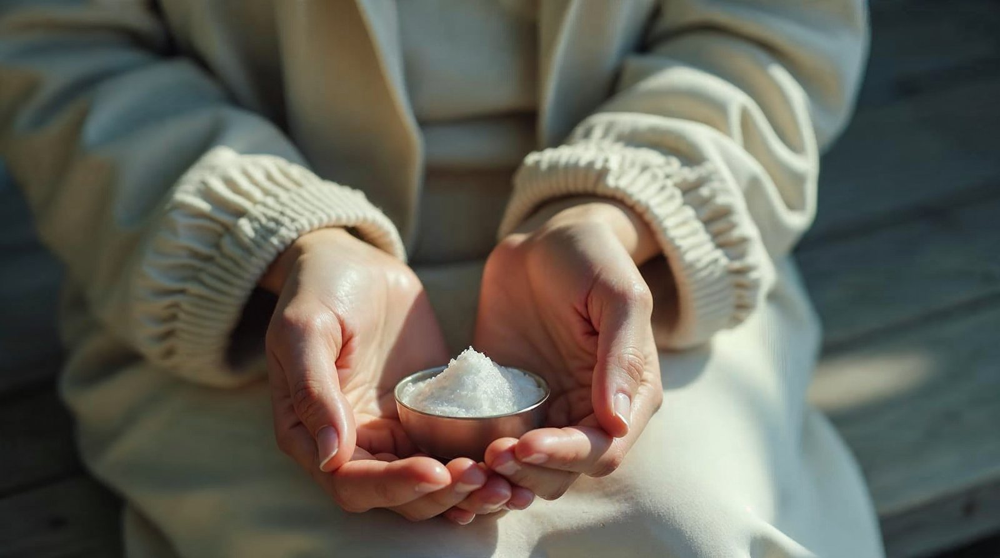
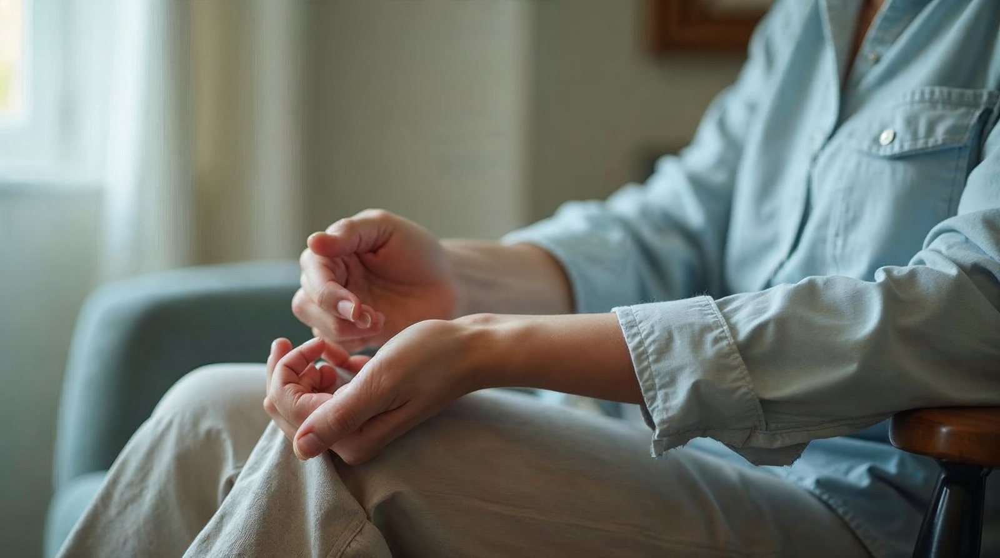
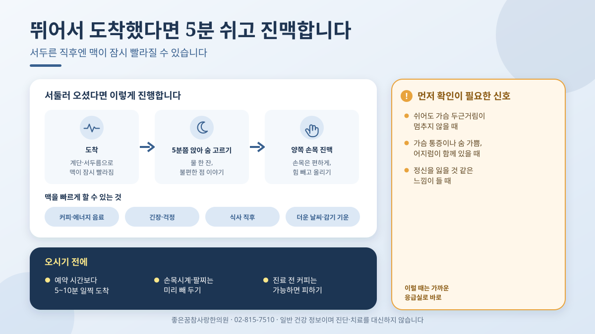

이종호 한의사 감수좋은꿈참사랑한의원 대표원장 (한의사 면허번호 19769)발행 2026-11-23 · 수정 2026-11-26
이 글의 차례
숨이 턱에 찬 채 진료실 의자에 앉으셨다면, 바로 손목을 내밀지 않으셔도 됩니다. 서둘러 걷거나 계단을 오른 직후에는 맥이 잠시 빨라지고 세게 느껴져 평소의 맥과 다르게 읽힐 수 있어서, 저는 숨을 고르시는 동안 먼저 이야기를 듣고 그다음에 맥을 짚습니다.
그날 커피를 언제 드셨는지, 얼마나 긴장하셨는지도 함께 헤아립니다. 다만 쉬어도 두근거림이나 숨 가쁨이 가라앉지 않거나, 가슴 통증이나 쓰러질 듯한 어지럼이 있다면 진맥을 기다리지 말고 가까운 응급실에서 먼저 확인을 받으셔야 합니다.
예약은 오후 2시인데 점심 자리가 생각보다 길어졌습니다. 상도역 3번 출구를 나와 오거리를 돌 즈음엔 거의 뛰다시피 하고, 건물에 들어서서는 계단을 두 칸씩 오릅니다. 접수대 앞에 섰을 때 이마엔 땀이 맺히고 숨은 가쁘게 차오릅니다. 진료실에 들어가자마자 양손을 올려 달라는 말을 들으면, 아직 쿵쾅거리는 가슴으로 이대로 괜찮을까 싶어지지요.
진료실에서 이런 말씀을 자주 듣습니다. 늦을까 봐 뛰어왔더니 숨이 아직 안 돌아왔다고, 이렇게 헐떡이는데 맥이 제대로 나오겠느냐고요. 미안한 얼굴로 손목을 내미시는 분도 많습니다. 저는 그 마음이 고맙습니다.
회사에서 겨우 빠져나온 분, 아이를 잠깐 맡기고 오신 분, 수업과 수업 사이에 틈을 낸 분. 다들 그 몇 분을 아끼려고 애쓰다 오십니다. 일하고 살림하고 누군가를 챙기느라, 내 몸을 돌보는 시간은 늘 맨 뒤로 밀려나 있었을 겁니다. 그렇게 어렵게 낸 시간이니 숨이 찬 것까지 미안해하실 일은 아닙니다.
왜 서둘러 온 맥에는 방금 오른 계단이 먼저 비칠까요
빠르게 걷거나 계단을 오르면 다리 근육이 평소보다 많은 산소를 씁니다. 심장은 그만큼 피를 더 보내려고 빠르고 세게 뜁니다. 멈춰 서서 쉬면 몇 분에 걸쳐 차츰 제자리로 돌아오는데, 그 속도는 사람마다 꽤 다릅니다. 평소 몸을 자주 움직이는 분은 금세 가라앉고, 오랜만에 계단을 오르신 분이나 어르신은 시간이 조금 더 걸리기도 합니다.
진맥은 맥이 몇 번 뛰는지 세는 일만이 아닙니다. 손목 안쪽 엄지 쪽으로 맥이 뛰는 곳을 촌구라고 하는데, 손목뼈가 튀어나온 자리를 관, 그보다 손바닥 쪽을 촌, 팔꿈치 쪽을 척이라 부르고 이 세 자리에 손가락 세 개를 올립니다.
자리마다 살짝 올려놓았을 때, 중간쯤 눌렀을 때, 깊이 눌렀을 때를 나누어 보고, 이것을 양손 모두에서 봅니다. 세 자리에 세 깊이를 합쳐 삼부구후라고 합니다.
한의학은 건강한 맥의 조건으로 세 가지를 꼽습니다. 부드럽고 여유가 있는지, 힘과 리듬이 고른지, 깊이 눌러도 뿌리가 살아 있는지입니다. 빠르기는 숨 한 번 쉴 때 네다섯 번 뛰는 것을 기준으로 봅니다. 그런데 막 뛰어오신 분은 숨도 가쁘고 맥도 이 기준을 훌쩍 넘어 뛰니, 기준을 대 보는 일부터 어려워집니다.
손끝의 느낌을 옛사람들은 자연에 빗대어 전해 왔습니다. 쟁반 위 구슬이 구르듯 매끄러운 맥, 거문고 줄처럼 팽팽한 맥, 실처럼 가는 맥, 칼로 대나무를 긁듯 껄끄러운 맥이 있습니다. 이런 결은 맥이 손끝을 세게 두드릴 때 그 큰 박동에 가려지기 쉽습니다. 손끝에 닿는 것이 그분의 맥인지, 방금 오른 계단의 맥인지 헷갈리는 순간이지요.
혈압을 잴 때도 5분쯤 편히 앉아 쉰 뒤에 재라고 흔히 안내합니다. 맥도 다르지 않습니다. 게다가 저는 손끝이 아닌 손가락 면으로 가볍게 짚으려 하는데, 박동이 세면 저도 모르게 손에 힘이 들어갑니다. 너무 세게, 오래 누르면 맥의 모양이 변하니 그날의 맥을 제대로 만나기가 더 어려워집니다.
맥은 얼굴 생김새처럼 사람마다 다릅니다
저는 맥에 좋고 나쁨이 있다기보다 얼굴 생김새처럼 사람마다 다를 뿐이라고 말씀드립니다. 봄에는 조금 팽팽하고, 여름에는 넘실거리고, 가을에는 가볍게 뜨고, 겨울에는 가라앉는 맥을 자연스럽게 봅니다. 나이와 체격, 하는 일에 따라서도 정상의 폭이 다릅니다.
그러니 제가 알고 싶은 것은 그분의 평소 얼굴인데, 서둘러 오신 직후의 맥은 그 얼굴에 잠깐 다른 표정이 씌워진 모습에 가깝습니다.
이 차이를 가벼이 넘기지 않는 까닭은 진맥이 치료를 바꾸기 때문입니다. 맥을 보고 지금 치료가 필요한지 지켜봐도 되는지를 나누고, 한약을 정한다면 처방의 방향과 세기를 맞춥니다.
기운을 아껴야 하는 맥이 있고 쌓인 열을 풀어야 하는 맥이 있어서 생활 조언도 달라집니다. 계단 때문에 들뜬 맥을 평소 맥으로 읽으면, 기운을 아껴야 할 분께 엉뚱한 이야기를 드리게 될 수도 있습니다.
서두름만 맥을 바꾸는 것은 아닙니다. 진료 직전에 마신 진한 커피나 에너지 음료, 방금 피운 담배, 뜨거운 목욕, 배가 아주 부른 식사도 맥을 잠시 빠르게 할 수 있습니다. 반대로 겨울에 추운 바깥을 오래 걸어오신 분은 손이 꽁꽁 얼어 맥이 실제보다 가늘고 약하게 느껴지기도 합니다. 전날 밤 잠을 설쳤거나 술을 드셨다면 그것도 맥에 실립니다.
마음도 맥에 실립니다. 병원에만 오면 혈압이 오르는 분들이 있다는 것은 널리 알려진 이야기입니다. 처음 오신 진료실은 낯설고, 무슨 말을 들을지 걱정되고, 다음 일정이 신경 쓰입니다. 그래서 저는 맥을 짚는 동안에도 편하게 이야기를 이어 가며 그분의 말을 조금 더 듣습니다.
맥 하나로 결론을 내리지 않습니다
한의학은 오래전부터 네 가지 방법으로 사람을 살폈습니다. 눈으로 안색과 체형, 혀를 보고, 목소리와 숨소리를 듣고, 증상과 잠과 식사를 묻고, 손으로 맥과 배를 만져 봅니다. 진맥은 이 가운데 손으로 살피는 진찰에 속합니다. 저는 의사를 진단하는 사람이라고 생각합니다. 진단이 먼저 있고, 치료 기술은 그다음에 따라옵니다.
그래서 맥이 들떠 있는 날에는 다른 단서에 조금 더 기댑니다. 혀를 보고, 필요하면 배를 눌러 보고, 손발이 찬지, 잠과 소화는 어떤지 여쭙습니다. 같은 맥이라도 손발이 따뜻한 분과 찬 분은 살피는 방향이 다릅니다.
진료실에서는 둘이 아니라 셋이 이야기한다고 저는 생각합니다. 환자분과 저, 그리고 환자분의 맥입니다. 그 셋 가운데 하나가 아직 숨이 차 있다면, 숨을 고를 시간을 드리는 것이 순서입니다.
실습 시간에 들었던 말이 있습니다. 잘 모르겠으면 손을 한번 떼라는 말입니다. 맥이 너무 빠르게 손끝을 두드려 잘 읽히지 않을 때 저는 손을 떼고 이야기를 조금 더 나눈 뒤 다시 얹습니다. 다시 얹으면 제가 얼마나 세게 누르고 있었는지부터 알게 됩니다.
저는 진맥을 수십만 번은 해 봐야 손에 익는 기술이라고 생각합니다. 오랫동안 추나로 환자분 몸을 손으로 읽어 오다가, 한 동료의 권유로 그 손끝 감각을 진맥에 쏟기 시작했습니다. 손으로 느끼고 그 느낌이 맞는지 사람에게 묻는 일을 지금도 매일 손목 위에서 되풀이합니다.
서둘러 오신 날 맥을 바로 짚지 않는 것은 시간을 허투루 쓰는 것이 아니라, 그 손끝을 조금 더 믿을 만하게 만드는 일입니다.

이런 분들을 자주 뵙습니다
점심시간을 쪼개 오시는 직장인이 많습니다. 회의가 늦게 끝나 서둘러 나왔고, 진료가 끝나면 다시 뛰어 들어가야 합니다. 의자에 앉아서도 휴대폰 알림을 들여다보고, 어깨는 귀 쪽으로 올라가 있습니다. 저는 진료하는 동안만이라도 휴대폰을 무음으로 돌려 두시자고 말씀드리고, 숨을 한 번 길게 내쉬어 보시게 합니다.
아이 하원 시간에 맞춰야 하는 부모님도 자주 뵙습니다. 진료를 마치자마자 어린이집으로 달려가야 해서 앉아 계시는 동안에도 자꾸 시계를 보십니다. 서두르는 마음 자체가 맥에 실리는 경우입니다. 몇 시까지 나가셔야 하는지 처음부터 말씀해 주시면, 그 안에서 오늘 꼭 할 것과 다음으로 미뤄도 될 것을 함께 정할 수 있습니다.
어르신들은 계단을 천천히 오르셨는데도 숨이 차고 무릎이 시큰하다고 하십니다. 그러면서도 미안하다며 괜찮다고만 하시지요. 어르신은 맥이 가라앉는 데 시간이 조금 더 걸릴 수 있어 저는 여유를 더 두고 이야기부터 나눕니다. 혈압약이나 심장약을 드시는 분이 많으니 약 봉투를 그대로 가져오시면 됩니다.
겨울 아침 찬바람을 맞으며 오래 걸어오신 분, 운동을 마치고 땀이 식기도 전에 들르신 분도 있습니다. 앞의 분은 손이 차가워 맥이 가늘게 느껴지고, 뒤의 분은 맥이 아직 들떠 있습니다. 두 분 모두 몸을 실내 온도에 맞추고 숨을 고르는 몇 분이 필요합니다. 운동을 꾸준히 해 온 분은 평소 맥이 느린 편인 경우가 있어 그 점도 함께 감안합니다.

도착해서 진맥 전까지, 이렇게 해 보세요
가장 쉬운 방법은 예약 시간보다 10분쯤 일찍 도착하는 것입니다. 출발 시각을 정할 때 도착을 예약 시각이 아니라 그 10분 앞에 맞춰 보세요.
노량진역에서 마을버스 동작01을 타고 오신다면 버스를 기다리는 시간까지 넉넉히 잡아 두시고, 상도역 3번 출구에서는 약 200m 직진해 오거리에서 우회전한 뒤 약 200m를 더 오시면 됩니다.
늦어질 것 같으면 뛰기보다 전화(02-815-7510)를 한 통 주세요. 예약하신 분이 말없이 오지 않으시면 저희가 먼저 전화를 드리는데, 재촉하려는 것이 아니라 무슨 일이 있나 걱정이 되어서입니다.
도착하면 외투를 벗고 의자에 등을 기대 앉으세요. 발바닥은 바닥에 편하게 두고 손은 무릎 위에 내려놓습니다. 코로 편하게 들이쉬고, 들이쉴 때보다 조금 더 길게 내쉬어 보세요. 억지로 깊게 쉴 필요는 없고, 어지러우면 바로 멈추고 평소처럼 숨 쉬시면 됩니다.
그렇게 5분쯤 앉아 계시면 대개 숨이 가라앉습니다. 계단을 뛰어오르셨거나 평소 숨이 쉽게 차는 편이라면 조금 더 여유를 두셔도 괜찮습니다. 이 시간에는 휴대폰을 내려놓아 주세요. 손목시계나 팔찌는 미리 풀어 두시고, 소매를 손목 위로 쉽게 걷을 수 있는 옷이면 더 좋습니다.
진료실에 들어오시면 오늘 서둘러 왔다는 한마디만 해 주셔도 충분합니다. 커피를 언제 마셨는지, 식사는 언제 하셨는지도 알려 주세요. 매일 아침 커피를 드시는 분이라면 굳이 거르지 마시고 평소대로 드신 뒤 그 사실만 말씀해 주시면 됩니다. 다만 진료 직전 한두 시간 안에 진한 커피나 에너지 음료를 더하는 것은 피해 보세요.
맥을 짚는 동안에는 팔을 심장 높이쯤에 편하게 올려 두고, 손바닥이 위를 보게 한 채 손가락 힘을 빼 주세요. 숨은 평소처럼 쉬시고, 제가 여쭙는 말에는 편하게 답하셔도 됩니다.
맥의 이름을 외우실 필요는 없습니다. 저는 진맥을 마치면 오늘 무엇이 가장 불편하셨는지, 제가 무엇을 더 살펴보고 싶은지, 다음번까지 어떤 변화를 눈여겨보시면 좋을지 이 세 가지를 말씀드리려 합니다.
혹시 이런 편이신가요? 약속 시간에 늘 아슬아슬하게 도착한다. 계단을 조금만 올라도 남들보다 숨이 오래 찬다. 가만히 쉬고 있는데도 가슴이 두근거릴 때가 있다. 하루에 커피를 세 잔 넘게 마신다. 두 가지 넘게 고개가 끄덕여진다면 다음 진료 때 그 이야기부터 꺼내 주세요.
집에서 내 맥박을 한번 재어 보세요
진료실의 맥과 집에서의 맥박을 견주어 보면 내 몸의 리듬을 아는 데 보탬이 됩니다. 아침에 일어나 의자에 5분쯤 앉아 있다가 손목 안쪽 엄지 쪽에 검지와 중지를 가볍게 얹어 보세요. 박동이 느껴지면 30초 동안 세어 두 배를 하거나 1분을 그대로 셉니다. 성인이 편히 쉴 때는 1분에 60~100회 정도를 흔히 정상 범위로 봅니다.
숫자만큼 눈여겨볼 것이 리듬입니다. 일정한 간격으로 뛰는지, 가끔 한 박자씩 건너뛰는 느낌이 있는지 느껴 보세요. 계단을 오른 직후에 한 번, 5분 쉰 뒤에 한 번 재어 보면 내 맥이 얼마나 빨리 제자리로 돌아오는지도 알 수 있습니다.
숫자 하나에 마음을 쓰기보다 며칠 동안 같은 시간, 같은 자세로 재어 흐름을 보시고, 스마트워치 기록이 있다면 함께 보여 주셔도 좋습니다.
얼마나 지켜보고, 언제 진료를 받을까요
가볍게 서두른 정도라면 앉아서 쉬는 몇 분 사이에 맥은 대개 가라앉습니다. 진료실에서도 잠시 이야기를 나누며 기다리는데, 10분 넘게 쉬었는데도 두근거림이 그대로라면 진맥을 이어 가지 않고 가까운 응급실에서 먼저 확인을 받으시도록 안내합니다.
집에서도 쉬고 있는데 가슴이 두근거리는 일이 1~2주 사이 여러 번 되풀이된다면, 언제 어떤 상황이었는지 적어 두고 내과나 순환기내과 진료를 받아 보세요. 맥이 고르지 않다는 느낌이 반복될 때는 심전도처럼 그 순간의 리듬을 기록하는 검사가 판단에 도움이 되는 경우가 많습니다.
이런 증상은 먼저 확인이 필요합니다
- 쉬어도 10분 넘게 가슴 두근거림이 가라앉지 않는 경우
- 가슴 통증이나 가슴을 조이는 느낌, 쉬어도 가라앉지 않는 숨 가쁨 가운데 하나라도 있는 경우
이런 신호가 있으면 한의원보다 가까운 병원이나 응급실을 먼저 찾으세요.
먼저 이렇게 여쭙니다
좋은꿈참사랑한의원에 처음 오시면 저는 오늘 어떻게 오셨는지부터 여쭙고, 지난 이야기를 듣습니다.
- 걸어오셨는지 뛰어오셨는지, 커피와 식사는 언제였는지
- 어디가 불편해서 오셨는지, 언제부터였는지, 전에 받아 본 치료나 검사가 있는지
- 잠과 소화, 몸이 찬 편인지 더운 편인지, 화장실은 편한지
- 혈압약이나 심장약, 갑상선약을 드시는지
그다음 양손을 올려 봐 달라고 말씀드립니다. 한 자리만 보지 않고 양손 여섯 자리 전체의 흐름과 좌우 차이를 먼저 보고, 자리마다 깊이를 바꿔 가며 살핍니다. 아직 맥이 들떠 있다 싶으면 손을 떼고 이야기를 조금 더 나눈 뒤 다시 짚습니다. 필요하다고 판단되면 혀를 보거나 배를 살핍니다.
두근거림이 잦다고 하시면 언제, 얼마나 오래 그러는지 더 자세히 듣고 한의원보다 먼저 확인이 필요한 신호는 아닌지부터 가립니다. 그렇게 모은 이야기를 바탕으로 침이나 약침, 한약 상담 가운데 지금 상태에 맞는 방법을 함께 정하고, 치료를 마친 뒤에는 맥을 다시 짚어 그날의 반응을 살핍니다.
맥을 읽어 드리고, 몸이 어떻게 반응했는지 보고, 다시 맥을 짚으며 함께 걸어가는 진료라고 생각합니다. 여러 원장이 함께 진료하는 경우에도 일정 기간마다 제가 다시 맥을 확인합니다.
다음 진료도 가능하면 비슷한 시간대로 잡아 보세요. 조건이 비슷해야 지난번 맥과 견주어 보기 쉽습니다. 다시 오시면 지난번 맥과 함께 그사이 두근거림은 없었는지, 잠과 커피는 어땠는지부터 이어서 여쭙습니다.
오실 때 두근거림이 오는 시간대와 계기, 집에서 잰 혈압과 맥박, 복용 중인 약 이름, 하루 커피와 에너지 음료 양을 메모해 오시면 이야기가 훨씬 빨라집니다.
마치며
살림을 하고 일을 하고 누군가를 챙기느라, 정작 내 몸은 뒷전인 채로 지내는 때가 있습니다. 그러다 어렵게 시간을 내어 제 앞에 앉으시면, 저는 그동안 이 몸이 그분을 묵묵히 기다려 주었구나 하는 생각을 합니다. 그러니 진료실에서는 5분쯤 그분이 몸을 기다려 주셔도 괜찮습니다. 저는 우리 한의원이 잘 쉬다 가는 곳이었으면 합니다.
다음에 오시면 오늘은 어떻게 오셨는지, 숨은 금방 가라앉았는지부터 여쭙겠습니다. 그리고 양손을 올려 봐 달라고 말씀드리면, 지난번에 미처 못 하신 이야기 하나를 들려주셔도 좋겠습니다. 저는 그 이야기를 들으면서 다시 손목을 짚겠습니다.
함께 읽으면 좋은 글
- 맥진은 어떻게 하고 손목에서 무엇을 살피나요?
- 설진 전에 커피나 사탕을 먹으면 혀 색이 달라지나요?
- 어르신이 처음 진맥을 받으실 때 무엇을 보고 어떤 것을 여쭙나요?

여쭙는 것
- 걸어오셨는지 뛰어오셨는지, 커피와 식사는 언제였는지
- 어디가 불편해서 오셨는지, 언제부터였는지, 전에 받아 본 치료나 검사가 있는지
- 잠과 소화, 몸이 찬 편인지 더운 편인지, 화장실은 편한지
먼저 확인이 필요한 신호
- 쉬어도 10분 넘게 가슴 두근거림이 가라앉지 않는 경우
- 가슴 통증이나 가슴을 조이는 느낌, 쉬어도 가라앉지 않는 숨 가쁨 가운데 하나라도…
자주 묻는 질문
진맥은 얼마나 걸리나요?
양쪽 손목을 짚으며 잠시 살핍니다. 편하게 앉아 계시면 됩니다.
진맥만으로 병을 알 수 있나요?
진맥은 단서 가운데 하나이며, 말씀과 다른 진찰을 함께 보고 판단합니다.
진료 직전에 커피를 마셨는데 진맥을 받아도 되나요?
받으실 수 있습니다. 언제, 무엇을, 얼마나 드셨는지 알려 주시면 그만큼 함께 고려해 살핍니다.
엘리베이터가 있나요?
오시는 길과 건물 이용은 전화(02-815-7510)로 미리 여쭤봐 주시면 안내해 드립니다.
진료 시간은 어떻게 되나요?
좋은꿈참사랑한의원은 평일 09:30~20:00(점심 13:00~14:00), 토·일·공휴일 09:30~15:00에 진료합니다.
좋은꿈참사랑한의원은 재진 때 지난번 이야기부터 이어서 여쭙니다. 진료시간과 예약은 오시는 길에서 확인하세요.
어디서 상담받을 수 있나요?
좋은꿈참사랑한의원은 서울 동작구 만양로2길 2 신성빌딩 3층·5층(서울 동작구 상도동, 7호선 상도역 3번 출구 근처)에 있습니다. 한의사 3명(이종호 대표원장, 조영기 수석진료원장, 정원영 진료원장)이 진료합니다. 진료시간은 평일 09:30~20:00(점심 13:00~14:00), 토·일·공휴일 09:30~15:00이며, 방문 전 전화로 확인을 권합니다. 예약은 네이버 예약, 카카오톡 상담, 전화 02-815-7510로 받습니다.
이 글은 일반적인 건강 정보이며 개인의 진단이나 치료를 대신하지 않습니다. 증상이 있거나 복용 중인 약이 있다면 진료를 통해 확인하세요. 치료 효과는 개인마다 다를 수 있습니다.
작성 기준: 일반적으로 알려져 있는 건강 정보를 참고해 정리했습니다(대표원장 감수). 증상 기록은 1~2주 동안 하루 1회, 비슷한 시간에 적어 오시면 지난 상태와 비교하기 쉽습니다.